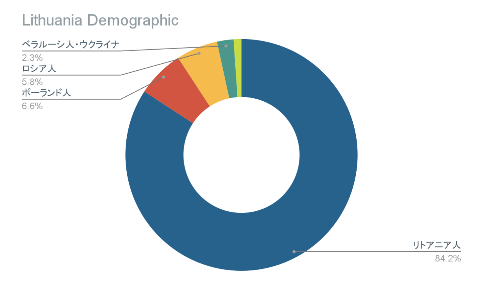

 （引用：Population: demographic situation, languages and religions | Eurydice (europa.eu)）
1.902 million(2020) (Source: World Bank)
国教はないが、ローマカトリック教会が一番盛んです。他の宗教ではロシア正教会があります。
リトアニア語
ユーロ
1ユーロ＝128円（2022年3月現在）
キャッシュレスが進んでいます。
政治思想が広く、社会民主党、自由党、保守党などがあります。
過去にナチス・ドイツやソ連に支配を受けていましたが、1990年に独立を回復しました。ちなみに現在のリトアニア憲法は5番目の憲法です。
石油業を中心として食料、化学、家具、繊維工具などに力を入れている。
比較的四季がはっきりしています。北の国なので冬の期間は長く、日は3時くらいに沈みます。雪がたくさん降ります。
公共交通機関はトロリーバスです。徒歩での移動もします。半年60ユーロのプランがあります。電気スクーターなどもよく利用されていて、ボルトというシェア電気スクーターが人気です。また、バルト三国内はバスで簡単に移動できます。
治安はとても安全です。裏道などには落書きがあるものの、カフェで荷物を放置しても大丈夫です。夜中も大通りなら一人で歩いていても危険を感じることはないです。
上記でも書いたようにドイツ騎士団、ロシア、ポーランド、ナチス・ドイツやソ連など、数々の侵攻をうけ合併と独立を繰り返した歴史があります。リトアニア文字が禁止されたこともありました。1990年3月11日にソ連から独立しました。
独立記念日のパレードがあるのですが、これは1918年2月16日にロシアから独立した日、リトアニア評議会がリトアニア独立宣言書に署名した日です。この独立宣言書の原本は行方不明になっていたのですが2017年にドイツに保管されていることが分かりました。
音楽も盛んでヴィリニュスフェスティバル、クリストファー・サマー・フェスティバル、カウナス・ジャズなど幅広い音楽の分野での国際的なイベントが主催されています。
また、カウナスは杉原千畝がナチス・ドイツによって迫害されていたユダヤ人にビザを発行した場所です。「命のビザ」とも呼ばれ、約6500人を救ったと言われています。
トロリーバスでの移動が一般的です。
大手会社はBite GMS、Tele2、Omnitelです。Bite GMSは農村地域では不都合なことがあるかもしれないですが料金政策の評判が高いです。Tele2は国土の80％をカバーしています。
全ての会社でプリペイドシステムが導入されています。Omnitelは全国をカバーしているものの３GやLTEでトラブルが起こる恐れがあります。カードはガソリンスタンドやスーパーなどで簡単に購入できます。
物価は安いです。観光地以外での外食は日本よりも安いです。チップも観光客向けのところが中心です。アジア食品店はあまり見かけないです。
クリスマスに気合が入っています。リトアニアの首都、ヴィリニュスのクリスマスツリーはEurope Best Destinationsというヨーロッパの旅行ポータルサイトで世界一美しいクリスマスツリーに選ばれました。また、アメリカの旅行ポータルサイト、Conde Nast Travellerでも世界で美しいクリスマスツリー15選に選ばれました。
校舎が世界遺産に登録されており、迷路のような設計になっています。バルト三国の中でも古い大学として知られています。
人文科、社会科学、物理、生物医学、テクノロジーの分野で学部と大学院の研究が行われています。
Vilniaus universitetas (vu.lt)
中国人と韓国人が多いです。対応も比較的良いです。コロナの時にメール送ったところ2日くらいで返信が来ました。
寮はキャンパスから離れているのですが、近くにきれいな図書館があります。
暇な時間が結構できます。
リトアニア人は日本人に似ていて物をはっきり言わないところがあるので質問はちゃんと聞きましょう。